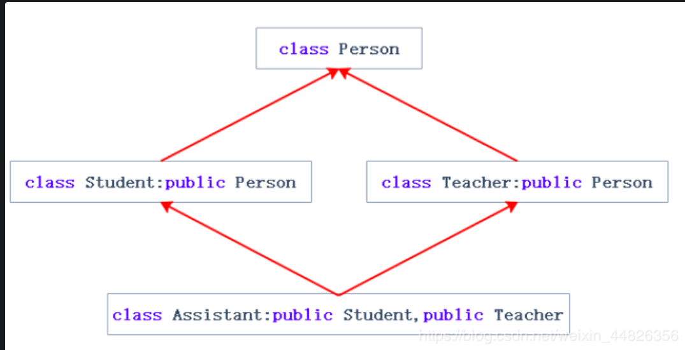

Java
入门基础流程控制数组OOP方法构造方法方法重载继承多态接口继承关系静态字段和静态方法包作用域内部类classpath和jar模块核心类字符串和编码字符串常量池StringBuilder包装类JavaBean枚举记录类BigInteger和BigDecimal工具类异常处理异常捕获异常抛出异常自定义异常：NullPointerException断言Commons Logginglog4j反射Class类获取字段调用方法构造方法获取继承关系动态代理注解使用注解定义注解处理注解
入门
基础
1: jdk/bin:
- java：这个可执行程序其实就是JVM，运行Java程序，就是启动JVM，然后让JVM执行指定的编译后的代码；
- javac：这是Java的编译器，它用于把Java源码文件（以
.java后缀结尾）编译为Java字节码文件（以.class后缀结尾）； - jar：用于把一组
.class文件打包成一个.jar文件，便于发布； - javadoc：用于从Java源码中自动提取注释并生成文档；
- jdb：Java调试器，用于开发阶段的运行调试。
2：Java程序总是从main方法开始执行。Java入口程序规定的方法必须是静态方法，方法名必须为main，括号内的参数必须是String数组。
3：一个Java源码只能定义一个public类型的class，并且class名称和文件名要完全一致；
4：注释
71// 单行2/*3多行4*/5/**6 * 文档注7 */5: 基本数据类型
整数类型：
byte（1） :-128 ~ 127
0 ：00000000 -> 1 : 00000001 -> … -> 127 : 01111111 -> -128 : 10000000（补码）-> -127:10000001(补码) -> … -> -1:11111111(补码) -> 0 : 00000000,形成闭环
补码相互转换以及求对应的十进制求值时，符号位是绝不参与的，但是在运算加减过程中，符号位参与位运算。
short(2)，int(4)，long(8),整数的表示和计算都是准确的。
浮点数类型：float(4)，double(8)
浮点数常常无法精确表示，并且浮点数的运算结果可能有误差；比较两个浮点数通常比较它们的差的绝对值是否小于一个特定值；
字符类型：char(2)，表示一个Unicode字符
布尔类型：boolean（4）
6：引用类型
- string
7：常量
final修饰，全大写。一般在构造方法中初始化final字段
8：自动推断
var sb = new StringBuilder();
9：移位
- << 左移实际上就是不断地×2，>> 右移实际上就是不断地÷2
- 正数移位左右补零；负数左移右边（补码）补零，右移左边（补码）补一
10：转型后超过了整型能表示的最大范围，将返回整型的最大值： 2147483647
四舍五入：对浮点数加上0.5再强制转型
11：三元运算b ? x : y会首先计算b，如果b为true，则只计算x，否则，只计算y。此外，x和y的类型必须相同，因为返回值不是boolean，而是x和y之一。
12： Java在内存中总是使用Unicode表示字符，占用两个字节。（Java 11及以后拉丁文一个字符使用一个字节存储，非拉丁文才用两个及以上字节存储）
13：字符串可以用"""..."""表示多行字符串（Text Blocks），总是以最短的行首空格为基准，去掉多行字符串前面共同的空格。
14：字符串不可变
81public class Main {2 public static void main(String[] args) {3 String s = "hello";4 String t = s;5 s = "world";6 System.out.println(t); // "hello"7 }8}15：数组变量可以指向不同对象，数组本身是引用类型：
int [] x=new int[3]; x=new int [5];原先数组并未改变，只是指向了另一个数组。
16： 字符串数组
相较于基本数据类型数组，修改字符串数组元素的值并非修改内存中的值，而是新开辟一个字符串对象，并将索引指向新的字符串对象。
81public class Main {2 public static void main(String[] args) {3 String[] names = {"ABC", "XYZ", "zoo"};4 String s = names[1];5 names[1] = "cat";6 System.out.println(s); // xyz7 }8}17：数组元素可以是值类型（如int）或引用类型（如String），但数组本身是引用类型；
18：格式化输出
11System.out.printf("%?",x)| 占位符 | 说明 |
|---|---|
| %d | 格式化输出整数 |
| %x | 格式化输出十六进制整数 |
| %f | 格式化输出浮点数 |
| %e | 格式化输出科学计数法表示的浮点数 |
| %s | 格式化字符串 |
格式化输入：nextInt等不读取回车，会把回车留给下一个输入。
19：应用类型判等
要避免NullPointerException错误，利用短路运算符&&：if (s1 != null && s1.equals("hello"))，可以把一定不是null的对象"hello"放到前面：例如：if ("hello".equals(s))
流程控制
1：串联if else,大于判断从大到小，小于判断从小到大。
2：switch
等价于多个串联判等if else，计算结果必须是整型、字符串或枚举类型；switch语句是比较“内容相等”,调用的是equals。
91//多个case语句执行的是同一组语句块2case 0:3case 1:4 System.out.println("Selected 0, 1");5 break;6//多个case语句执行的是同一组语句块7case 0,1:8 System.out.println("Selected 0, 1");9 break;181//Java 12 新特性，只执行匹配上语句，没有穿透效应 ，不用加break2case "mango" -> {3 System.out.println("Selected mango");4 }5default -> System.out.println("No fruit selected");6
7//带返回值8String fruit = "apple";9int opt = switch (fruit) {10 //简单返回，只有一行。11 case "apple" -> 1;12 case "pear", "mango" ->{13 //多行复杂返回14 int code = fruit.hashCode();15 yield code; 16 }17 default -> 0;18}; // 注意赋值语句要以;结束数组
1：Arrays
Arrays.sort():对数组排序实际上修改了数组本身,对于基本类型数组，改变元素的存储顺序，对于引用类型数组，不改变存储顺序，改变的是索引指向的对象。排序对值类型排序改变的是实际数据，对引用类型排序改变的是索引与元素间的对应关系。
2：多维数组的每个数组元素长度都不要求相同；打印多维数组可以使用Arrays.deepToString()；
OOP
方法
1：隐含的变量this，它始终指向当前实例，当前实例是指调用该方法的对象。
2：可变参数实际就是一个数组
31 public void setNames(String... names) {2 String [] s = names;3 }3：基本类型参数的传递，是调用方值的复制。双方各自的后续修改，互不影响。
引用类型参数的传递，调用方的变量，和接收方的参数变量，指向的是同一个对象。双方任意一方对这个对象的修改，都会影响对方。
注意传递的变量是直接引用string还是间接引用string
直接传递一个string 变量：外界重新赋值是重新创建一个对象，并把变量指针指向新的对象，并不改变原先对象的值，所以修改外部string值不会改变对象内string值，因为对象内string仍然指向旧的对象。
间接传递一个string变量：如传递一个string 数组，一个包含string字段的对象，通过函数传递的是数组或者对象的引用，外界重新赋值是重新创建一个对象，并把变量索引指向新的对象，此时外部和内部的索引都发生改变，string值同步变化。
直接传递一个基本类型参数，是将值复制后传递给函数，内外独立变化。
间接传递一个基本类型变量：如传递一个int 数组，一个包含int字段的对象，通过函数传递的是数组或者对象的引用，外界重新赋值是直接修改对象值，此时外部和内部的同步发生改变。
构造方法
1：构造方法没有返回值（也没有void），调用构造方法，必须用new操作符。
2：创建对象实例的时候，按照如下顺序进行初始化：
- 先初始化字段，例如，
int age = 10;表示字段初始化为10，double salary;表示字段默认初始化为0，String name;表示引用类型字段默认初始化为null； - 局部变量不会自动初始化。
- 执行构造方法的代码进行初始化。
构造方法的代码由于后运行，字段值最终由构造方法的代码确定
3：一个构造方法可以调用其他构造方法，这样做的目的是便于代码复用。调用其他构造方法的语法是this(…)
super关键字表示父类（超类）。子类引用父类的字段时，可以用super.fieldName
方法重载
1：参数列表不同（参数个数，类型，顺序），重载方法返回值类型应该相同
继承
1：子类无法访问父类的private字段或者private方法，可以自动获得了父类的所有protected、public字段和方法，父类private变量的初始化可以通过子类构造方法里面使用super(…)实现，严禁定义与父类重名的字段。
2：任何class的构造方法，第一行语句必须是调用父类的构造方法。如果没有明确地调用父类的构造方法，编译器会帮我们自动加一句super();如果父类没有默认的构造方法，子类就必须显式调用super()并给出参数以便让编译器定位到父类的一个合适的构造方法。即子类不会继承任何父类的构造方法。子类默认的构造方法是编译器自动生成的，不是继承的。
3：protected关键字可以把字段和方法的访问权限控制在继承树内部。
4：要某个class被final修饰，那么任何类都不可以从该class继承。final class Person{}
Java 15开始，允许使用sealed修饰class，并通过permits明确写出能够从该class继承的子类名称
31public sealed class Shape permits Rect, Circle, Triangle {2 ...3}5：把一个子类类型安全地变为父类类型的赋值，被称为向上转型（upcasting），向上转型实际上是把一个子类型安全地变为更加抽象的父类型，因为子继承自父类，因此它拥有父类的全部功能。该对象只能调用父类已有方法，最终执行的是子类方法。Java的实例方法调用是基于运行时的实际类型的动态调用，而非变量的声明类型。
6：instanceof实际上判断一个变量所指向的实例是否是指定类型，或者这个类型的子类.(p instanceof Student)
7，向上转型：Person p = new Student(),(Persion)student,因为子类含有父类全部非private字段和方法，可以正常转换。转换后p只能调用persion类的方法，无法调用Student特有方法，并且调用父类方法时实际是执行子类重写方法，Java的实例方法调用是基于运行时的实际类型的动态调用，而非变量的声明类型。向上转型，屏蔽各个子类实现差异，便用调用。
8，向下转型：把一个父类类型强制转型为子类类型，Person p = new Student();(Student)p,只有在父类变量所指的实例为子类实例时才可向下转型。否则无法转换，因为子类功能比父类多，多的功能无法凭空变出来。
121Person p = new Student();2
3if (p instanceof Student) {4 // 只有判断成功才会向下转型:5 Student s = (Student) p; // 一定会成功6}7
8//java 15新特性9if (p instanceof Student stu) {10// 可以直接使用变量s:11 System.out.println(s.getScore());12}9：继承是is关系，组合是has关系。
因为Student是Person的一种，它们是is关系，而Student并不是Book。实际上Student和Book的关系是has关系。具有has关系不应该使用继承，而是使用组合，即Student可以持有一个Book实例。
41class Student extends Person {2 protected Book book;3 protected int score;4}10：
- 子类的构造方法可以通过
super()调用父类的构造方法； - 子类也可以使用super访问父类非private 的字段和方法；
18：重载：方法名相同，方法参数必须不相同，方法返回值可同可不同。虽然方法名相同，方法参数相同，但方法返回值不同，也是不同的方法。不可构建只有返回值不同的重载方法。
多态
1：多态：
- 针对某个类型的方法调用，其真正执行的方法取决于运行时期实际类型的方法，运行期才能动态决定调用的子类方法，允许添加更多类型的子类实现功能扩展，通过指向子类对象的父类变量统一调用，屏蔽底层实现差异，不需要修改基于父类的代码。
- 子类的覆写方法中，如果要调用父类的被覆写的方法，可以通过
super来调用。 - 如果一个父类不允许子类对它的某个方法进行覆写，可以把该方法标记为
final：public final String hello() {}， - 多态是指方法，不是指字段，字段不能被覆写，父子同名字段相当于两个不同变量，如果在父类方法中调用父类字段，此时父类方法已经和父类字段绑定，再在子类中加入同名字段，并继承父类方法，通过子类调用方法，字段指向父类字段而非子类的同名字段。
- 多态前提(1) 有继承关系 (2) 父类引用指向子类对象 (3) 有同名方法重写.
2:final修饰符有多种作用：
final修饰的方法可以阻止被覆写:public final String hello() {}final修饰的class可以阻止被继承:final class Person{}final修饰的field必须在创建对象时初始化(常在构造方法中初始化），随后不可修改:final String name;
3：面向抽象编程的本质就是：
- 上层代码只定义规范（例如：
abstract class Person）； - 不需要子类就可以实现业务逻辑（正常编译）；
- 具体的业务逻辑由不同的子类实现，调用者并不关心。
- 可以通过抽象类类型去引用具体的子类的实例，并不关心抽象类型变量的具体子类型，尽量引用高层类型，避免引用实际子类型的方式，称之为面向抽象编程，以通过抽象类类型去引用具体的子类的实例，并不关心抽象类型变量的具体子类型。
接口
1：interface，就是比抽象类还要抽象的纯抽象接口，接口的字段只能是public static final类型。因为接口定义的所有方法默认都是public abstract的，所以这两个修饰符不需要写出来（写不写效果都一样），抽象方法就是为了被重写所以不能使用private关键字修饰！接口也是数据类型，适用于向上转型和向下转型。
抽象类和接口的对比如下：
| abstract class | interface | |
|---|---|---|
| 继承 | 只能extends一个class | 可以implements多个interface |
| 字段 | 可以定义实例字段 | 不能定义实例字段，可以有静态字段 |
| 抽象方法 | 可以定义抽象方法 | 可以定义抽象方法 |
| 非抽象方法 | 可以定义非抽象方法 | 可以定义default方法 |
| 构造器 | 有构造器 | 没有构造器 |
| 权限管理 | public、protected、默认、private | public、private |
一个interface可以继承自另一个interface。interface继承自interface使用extends，它相当于扩展了接口的方法。
2：一般来说，公共逻辑适合放在abstract class中，具体逻辑放到各个子类，而接口层次代表抽象程度。在使用的时候，实例化的对象永远只能是某个具体的子类，但总是通过接口去引用它，因为接口比抽象类更抽象。
3：defailt方法可以有方法体，
31 default void run() {2 System.out.println(getName() + " run");3 }实现类可以不必覆写default方法。default方法的目的是，当我们需要给接口新增一个方法时，会涉及到修改全部子类。如果新增的是default方法，那么子类就不必全部修改，只需要在需要覆写的地方去覆写新增方法。不推荐过度使用，如果你大量使用default方法在你的应用接口中，将很快意识到他没有真正精简代码。因为不能在接口中提炼default里重复的代码到一个新的普通方法，这与以精简代码为目的的default关键字相冲突。只能由实现类的实例访问。
default方法和抽象类的普通方法是有所不同的。因为interface没有字段，default方法无法访问字段，而抽象类的普通方法可以访问实例字段。抽象方法就是为了被重写所以不能使用private关键字修饰。它永远不能是静态的或私有的。
4，“类优先” 原则
若一个接口中定义了一个默认方法，而另外一个父类或接口中又定义了一个同名的方法时，如果一个父类提供了具体的实现，那么接口中具有相同名称和参数的默认方法会被忽略，当该类未重写该方法，将会调用父类中的方法。
如果一个接口提供一个默认方法，而另一个接口也提供了一个具有相同名称和参数列表的方法（不管方法是否是默认方法），将产生接口冲突，必须在当前实现类中Override该方法，否则编译器会因为不知道应该调用哪一个接口中的default方法而报错，重写接口中default方法后，编译器会执行重写后的方法。如果都是默认方法，也可以手动指定调用哪个默认方法：InterfaceName.super.methodName();
5，静态方法
31static void run() {2 System.out.println(getName() + " run");3 }实现者不能继承和重写它们，适合于提供实用方法，有助于避免实现类中的糟糕实现带来的不希望的结果。Java 接口静态方法仅对接口方法可见，但是和其他静态方法一样，静态方法是接口的一部分，只能在Interface类上调用静态方法，而不能在实现此Interface的类上调用静态方法：InterfaceName.staticMethod();✔，ImplementClass.staticMethod();❌
接口的静态方法和实现类自身定义的同名静态方法并不冲突，可以通过接口名或类名调用他们，互不影响。
6，私有方法/私有静态方法
可以让多个默认方法/静态方法调用共享一个私有方法/私有静态方法,改善接口内部的代码可重用性，私有接口方法将允许它们共享代码，并且避免把这个私有方法暴露给该接口的实现类。私有方法和私有静态方法不可被实现该接口的类或继承该接口的接口调用或重写。私有方法(private method)和私有静态方法(private static method)的提出都是对jdk8提出的default和public static method的补充。
接口中private方法不能是abstract抽象方法。因为abstract抽象方法是公开的用于给接口实现类实现的方法，所以不能是private。
接口中私有方法只能在接口内部的方法里面被调用。
接口中静态方法只能调用接口中的静态方法。
接口中default方法能调用接口中的静态方法和非静态方法。
221public interface InnerApp {23default void defaultMethod() {4System.out.println("default method");5privateMethod();6privateStaticMethod();7}89static void staticMethod() {10System.out.println("static method");11privateStaticMethod();12}1314private void privateMethod() {15System.out.println("private method");16}1718private static void privateStaticMethod() {19System.out.println("private static method");20}2122}
7，引入默认和静态方法扩展了接口的功能，jdk8开始引入的Lambda语法以及Stream API，都是在接口层实现的。
继承关系
1，Java不支持多继承，主要是为了避免多继承会让语言本身变得复杂（像C++），效率也会降低。而接口可以提供多继承的大多数好处，同时避免多重继承的复杂性和低效性。
2，菱形继承关系，即两个派生类继承同一个基类，同时两个派生类又作为基本继承给同一个派生类。这种继承形如菱形，故又称为菱形继承。菱形继承主要有数据冗余和二义性的问题。

由于最底层的派生类继承了两个基类，同时这两个基类有继承的是一个基类，故而会造成最顶部基类的两次调用，会造成数据冗余及二义性问题。在Assistant的对象中Person成员会有两份。getName（）方法无法知道该调用谁的name，执行出错。

3，继承与组合
- public继承是一种is-a的关系。也就是说每个派生类对象都是一个基类对象。组合是一种has-a的关系。假设B组合了A，每个B对象中都有一个A对象。优先使用对象组合，而不是类继承 。
- 继承允许你根据基类的实现来定义派生类的实现。这种通过生成派生类的复用通常被称为白箱复用(white-box reuse)。术语“白箱”是相对可视性而言：在继承方式中，基类的内部细节对子类可见 。继承一定程度破坏了基类的封装，基类的改变，对派生类有很大的影响。派生类和基类间的依赖关系很强，耦合度高。对象组合是类继承之外的另一种复用选择。新的更复杂的功能可以通过组装或组合对象来获得。对象组合要求被组合的对象具有良好定义的接口。这种复用风格被称为黑箱复用(black-box reuse)，因为对象的内部细节是不可见的。对象只以“黑箱”的形式出现。 组合类之间没有很强的依赖关系，耦合度低。优先使用对象组合有助于你保持每个类被封装。
- 实际尽量多去用组合。组合的耦合度低，代码维护性好。不过继承也有用武之地的，有些关系就适合继承那就用继承，另外要实现多态，也必须要继承。类之间的关系可以用继承，可以用组合，就 用组合。
4，避免菱形问题
使用接口（Interface）实现多重继承的功能，同时避免菱形问题。可以通过指定某个类必须实现哪些方法，但不需要在接口中定义这些方法的具体内容。一个类无论实现几个接口，即使各个接口中有同名方法，最终调用的是实现类覆写的方法，不用纠结具体使用哪个接口中的方法，因为接口中根本没有定义方法的实体，只定义了规范。
Java是不允许“实现多继承”，不允许继承多个类。但是Java支持“声明多继承”，语序实现多个接口。
5，Python实现了多继承，通过方法解析顺序（MRO）解决多继承中的同名冲突问题。MRO是采用C3算法（不同情况下，可表现为广度优先，也可表现为深度优先），搜寻到的第一个方法，或者变量进行调用。
静态字段和静态方法
1:实例字段在每个实例中都有自己的一个独立“空间”，但是静态字段只有一个共享“空间”，所有实例都会共享该字段,对于静态字段，无论修改哪个实例的静态字段，效果都是一样的：所有实例的静态字段都被修改了，原因是静态字段并不属于实例,在Java程序中，实例对象并没有静态字段。在代码中，实例对象能访问静态字段只是因为编译器可以根据实例类型自动转换为类名.静态字段来访问静态对象。推荐用类名来访问静态字段。可以把静态字段理解为描述class本身的字段,构造方法可以正常访问静态变量。
2：用static修饰的方法称为静态方法。调用实例方法必须通过一个实例变量，而调用静态方法则不需要实例变量，通过类名就可以调用。静态方法类似其它编程语言的函数，静态方法属于class而不属于实例，因此，静态方法内部，无法访问this变量，也无法访问实例字段，可以访问静态字段和其他静态方法，通过实例变量也可以调用静态方法，但这只是编译器自动帮我们把实例改写成类名而已。静态方法常用于工具类和辅助方法，如Math.random()、Arrays.sort()
3：因为interface是一个纯抽象类，所以它不能定义实例字段。但是，interface是可以有静态字段的，并且静态字段必须为final类型。int MALE = 1;(默认：public static final)
包
4：包没有父子关系。java.util和java.util.zip是不同的包，两者没有任何继承关系，导包最终指向类 ，java.util会导入util下的类，不会导入zip包下的类。没有定义包名的class，它使用的是默认包，非常容易引起名字冲突，因此，不推荐不写包名的做法，编译后的.class文件也需要按照包结构存放。import时，可以使用*，表示把这个包下面的所有class都导入进来（但不包括子包的class），import static的语法，它可以导入可以导入一个类的静态字段和静态方法。
5：位于同一个包的类，可以访问包作用域的字段和方法。不用public、protected、private修饰的字段和方法就是包作用域。
6：Java编译器最终编译出的.class文件只使用完整类名，因此，在代码中，当编译器遇到一个class名称时：
如果是完整类名，就直接根据完整类名查找这个
class；如果是简单类名，按下面的顺序依次查找：
- 查找当前
package是否存在这个class； - 查找
import的包是否包含这个class； - 查找
java.lang包是否包含这个class。
- 查找当前
如果按照上面的规则还无法确定类名，则编译报错。
编译器会自动帮我们做两个import动作：
- 默认自动
import当前package的其他class； - 默认自动
import java.lang.*。
作用域
1：
- 定义为
public的class、interface可以被其他任何类访问，定义为public的field、method可以被其他类访问，前提是首先有访问class的权限，一个.java文件只能包含一个public类，但可以包含多个非public类。如果有public类，文件名必须和public类的名字相同。 - 定义为
private的field、method无法被其他类访问，private访问权限被限定在class的内部，而且与方法声明顺序无关。推荐把private方法放到后面，因为public方法定义了类对外提供的功能，阅读代码的时候，应该先关注public方法，如果一个类内部还定义了嵌套类，那么，嵌套类拥有访问private的权限。 - 定义为
protected的字段和方法可以被子类访问，以及子类的子类。 - 包作用域是指一个类允许访问同一个
package的没有public、private修饰的class，以及没有public、protected、private修饰的字段和方法。
2：使用局部变量时，应该尽可能把局部变量的作用域缩小，尽可能延后声明局部变量。一个.java文件只能包含一个public类，但可以包含多个非public类。如果有public类，文件名必须和public类的名字相同
3：
| public | protected | default | private | |
|---|---|---|---|---|
| 类内部（直接访问成员） | ✔ | ✔ | ✔ | ✔ |
| 类内部（通过对象访问成员） | ✔ | ✔ | ✔ | ✔ |
| 本包（通过对像访问成员） | ✔ | ✔ | ✔ | ❌ |
| 子类（和父类同包，直接访问成员） | ✔ | ✔ | ✔ | ❌ |
| 子类（和父类异包，直接访问成员） | ✔ | ✔ | ❌ | ❌ |
| 子类（和父类同包，通过父类对象访问成员） | ✔ | ✔ | ✔ | ❌ |
| 子类（和父类异包，通过父类对象访问成员） | ✔ | ❌ | ❌ | ❌ |
| 外部包（通过对像访问成员） | ✔ | ❌ | ❌ | ❌ |
两层权限控制：类（public、default)+字段/方法（public 、protected 、default 、private)
内部类
1:成员内部类、局部内部类、匿名内部类和静态内部类
- 静态特点：全局唯一；只加载一次，优先于非静态；使用方式上不依赖于实例对象；生命周期属于类级别，从JVM 加载开始到JVM卸载结束。
- 非静态内部类不能脱离外部类实体被创建，一个非静态内部类可以访问外部类的数据和方法，因为他就在外部类里面。静态内部类可以脱离外部类对象独立创建。
- 非静态内部类能够访问外部类的静态和非静态成员。静态类不能访问外部类的非静态成员，只能访问外部类的静态成员。
561class Circle {2 3 //成员内部类可以无条件访问外部类的所有成员属性和成员方法（包括private成员和静态成员）。4 //当成员内部类拥有和外部类同名的成员变量或者方法时，会发生隐藏现象，即默认情况下访问的是成员内部类的成员。如果要访问外部类的同名成员：外部类.this.成员变量、外部类.this.成员方法，这是因为Inner Class除了有一个this指向它自己，还隐含地持有一个Outer Class实例，可以用Outer.this访问这个实例。所以，实例化一个Inner Class不能脱离Outer实例。5 //就是Inner Class的实例不能单独存在，必须依附于一个Outer Class的实例，在外部类中如果要访问成员内部类的成员，必须先创建一个成员内部类的对象，再通过指向这个对象的引用来访问：Outter outter = new Outter();Outter.Inner inner = outter.new Inner()6 class Draw { 7 、、、8 }9 10 // 静态内部类也是定义在另一个类里面的类，只不过在类的前面多了一个关键字static，可以访问Outer的private静态字段和静态方法。静态内部类是不需要依赖于外部类的，因此无法引用Outer.this，并且它不能使用外部类的非static成员变量或者方法，因为在没有外部类的对象的情况下，可以创建静态内部类的对象，如果允许访问外部类的非static成员就会产生矛盾，因为外部类的非static成员必须依附于具体的对象。：Outter.Inner inner = new Outter.Inner();11 static class Inner {12
13 public Inner() {14 、、、15 }16
17 }18 19 public void func(args){20 //局部内部类是定义在一个方法或者一个作用域里面的类，局部内部类的访问仅限于方法内或者该作用域内。局部内部类就像是方法里面的一个局部变量一样，是不能有public、protected、private以及static修饰符的。21 class Woman { 22 、、、23 }24 }25 26 //使用匿名内部类能够在实现父类或者接口中的方法情况下同时产生一个相应的对象，27 //可以访问Outer Class的private字段和方法28 //匿名内部类也是不能有访问修饰符和static修饰符的29 //一般来说，匿名内部类用于继承其他类或是实现接口，并不需要增加额外的方法，只是对继承方法的实现或是重写30 //必须依附于Outer Class的实例，即隐含地持有Outer.this实例31 // 匿名内部类不能为抽象类，因为系统在创建匿名内部类时，会立即创建匿名内部类的实例32 33 // 无参构造器版本34 func(new OnClickListener() {35 // 在ops里面全部实现抽象方法。36 37 public void onClick(View v) {38 、、、39 }40 41 });42 43 // 匿名内部类无法定义构造器。因为匿名内部类不存在类名，所以也就无从定义构造器。所以匿名内部类只能有一个隐式的无参构造器。但如果是通过继承抽象父类来创建匿名内部类，则匿名内部类将拥有和父类拥有相同行参列表的构造器。44 TargetClass targetClass=new TargetClass(params){ops;} //在ops里面全部实现抽象方法。如果有必要的话，也可以重写父类中的普通方法。45 46 //匿名类也完全可以继承自普通类47 //继承自HashMap48 HashMap<String, String> map = new HashMap<>() {49 { //初始化static块50 put("A", "1");51 put("B", "2");52 53 、、、54 }55 };56}classpath和jar
1：classpath是JVM用到的一个环境变量，它用来指示JVM如何搜索class。
假设classpath是.;C:\work\project1\bin;C:\shared，当JVM在加载abc.xyz.Hello这个类时，会依次查找：
- <当前目录>\abc\xyz\Hello.class
- C:\work\project1\bin\abc\xyz\Hello.class
- C:\shared\abc\xyz\Hello.class
如果JVM在某个路径下找到了对应的class文件，就不再往后继续搜索。如果所有路径下都没有找到，就报错。没有设置系统环境变量，也没有传入-cp参数，那么JVM默认的classpath为.，即当前目录，在IDE中运行Java程序，IDE自动传入的-cp参数是当前工程的out目录和引入的jar包。
2:jar可以把package组织的目录层级，以及各个目录下的所有文件（包括.class文件和其他文件）都打成一个jar文件,jar文件本质为一个.zip文件，jar包结构要和导包的路径相一致，不能加入多余上层路径。jar包里的第一层目录，不能是out，而应该是pkg0、pkg1。原因是pkg0.Class0必须按pkg0/Class0.class存放，而不是out/production/pkg0.Class0.class。
jar包还可以包含一个特殊的/META-INF/MANIFEST.MF文件，MANIFEST.MF是纯文本，可以指定Main-Class和其它信息。JVM会自动读取这个MANIFEST.MF文件，如果存在Main-Class，我们就不必在命令行指定启动的类名:java -jar hello.jar
模块
1:把一堆class封装为jar仅仅是一个打包的过程，而把一堆class封装为模块则不但需要打包，还需要写入依赖关系，并且还可以包含二进制代码（通常是JNI扩展）。此外，模块支持多版本，即在同一个模块中可以为不同的JVM提供不同的版本
2:
71oop-module2├── out3└── src4 ├── sample5 │ ├── Greeting.java6 │ └── Main.java7 └── module-info.javamodule-info.java:写入用到的包
41
2module hello { //hello为模块名，命名规则同包命名。3 requires java.xml;4}
创建模块
101//编译： 输出文件夹 - module-info.java - 全部逻辑代码2$ javac -d bin src/module-info.java src/sample/*.java3//打包： 输出jar文件 - 主类包路径 - 编译文件路径，bin后面是空格再加点 . 表示当前目录4jar --create --file hello.jar --main-class sample.Main -C bin .5//运行jar6java -jar hello.jar7//jar包转模块 ： jar文件 - mod文件8jmod create --class-path hello.jar hello.jmod9//运行模块： jar文件 - 模块名10java --module-path hello.jar --module hello
按需定制打包jre
JRE自身的标准库已经分拆成了模块，只需要带上程序用到的模块，其他的模块就可以被裁剪掉
41// mod文件 - 要添加的系统模块和自定义模块 - 输出文件夹2$ jlink --module-path hello.jmod --add-modules java.base,java.xml,hello --output jre/3//运行4$ jre \bin\java --module hello
权限管理
class的这些访问权限只在一个模块内有效，模块和模块之间，例如，a模块要访问b模块的某个class，必要条件是b模块明确地导出了可以访问的包。
61module hello {2exports sample;3requires java.base;5requires java.xml;6}
核心类
字符串和编码
1:Unicode编码需要两个或者更多字节表示,UTF-8编码，它是一种变长编码，用来把固定长度的Unicode编码变成1～4字节的变长编码,Java的String和char在内存中总是以Unicode编码表示。
321new String(obj)；//不会直接引用传入的对象，而是会复制一份。2String.valueOf("hello") //把任意基本类型或引用类型转换为字符串3"Hello".contains("ll");// true4"Hello".indexOf("l"); // 25"Hello".lastIndexOf("l"); // 36"Hello".startsWith("He"); // true7"Hello".endsWith("lo"); // true8"Hello".substring(2); // "llo"9"Hello".substring(2, 4); "ll"10" \tHello\r\n ".trim(); // "Hello"11"".isEmpty(); // true，因为字符串长度为012" ".isEmpty(); // false，因为字符串长度不为013" \n".isBlank(); // true，因为只包含空白字符14" Hello ".isBlank(); // false，因为包含非空白字符15s.replace("l", "w"); // "hewwo"，所有字符'l'被替换为'w'16String.join("***", new String[]{"A","B","c"})// "A***B***C"17var sj = new StringJoiner(", ", "Hello ", "!");18 for (String name : names) {19 sj.add(name);20 } //Hello n0,n1,n2 !21"Hi %s, your score is %d!".formatted("Alice", 80)22Integer.parseInt("123"); // 12323"Hello".toCharArray(); // String -> char[]24new String(charArray); // char[] -> String25byte[] b1 = "Hello".getBytes("UTF-8"); // 按UTF-8编码转换26String s1 = new String(b, "UTF-8"); // 按UTF-8转换27byte[] b2 = "Hello".getBytes("GBK"); // 按GBK编码转换28String s2 = new String(b, "GBK"); // 按GBK转换29Arrays.copy0f(as);as.clone(); //复制数组，变化独立。30 31String.join(",", names);// name1+","+name232strObj.formatted(params)// 使用占位符插入数据格式化字符串。如果传入函数的对象有可能改变，我们需要复制而不是直接引用。如果直接使用参数的引用，当外部代码不可信，这就会造成安全隐患。
字符串常量池
1,字符串不变性
- 字符串常量池的需要。字符串常量池的诞生是为了提升效率和减少内存分配。字符串使用频率很高，而处理的字符串中有很大概率会出现重复的情况。正因为String的不可变性，常量池很容易被管理和优化。
- 安全性考虑。设计成不可变可以有效的防止字符串被有意或者无意的篡改。从java源码中String的设计中我们不难发现，该类被final修饰，同时所有的属性都被final修饰，在源码中也未暴露任何成员变量的修改方法。
- 作为HashMap、HashTable等hash型数据key的必要。因为不可变的设计，jvm底层很容易在缓存String对象的时候缓存其hashcode，这样在执行效率上会大大提升。
2，加入常量池
直接使用双引号声明出来的
String对象会直接存储在常量池中。如果不是用双引号声明的
String对象，可以使用String提供的intern方法。intern 方法会从字符串常量池中查询当前字符串是否存在，若不存在，在常量池中生成一个对堆中原字符串对象的引用，并返回该引用，此时该引用与原始变量都指向堆中相同的内容，==比较为true；若存在直接返回常量池中的引用。81// 对象"1"被加入常量池中，堆中再生成两个值为"1"的匿名字符串对象，堆中再生成一个值为"11"的字符串对象，至此共创建4个对象。2String s1 = new String("1") + new String("1");3// 在常量池中创建引用指向堆中的"11"对象，该引用与原始字符串变量等价。创建的引用不算对象。4s1.intern();5// 直接返回常量池中的引用6String s2 = "11";7// true8s1==s2
3，StringTable的intern方法与Java中的HashMap的实现相似，如果放进String Pool的String非常多，就会造成Hash冲突严重，从而导致链表会很长，而链表长了后直接会造成的影响就是当调用String.intern时性能会大幅下降。
JDK7后常量池被重新定位到堆中。这意味着不再受限于单独的固定大小内存区域。并且如果常量不再被引用，那么JVM是可以回收它们来节省内存，因此常量池放在堆区可以更方便和堆区的其他对象一起被JVM进行垃圾收集管理。
4，拼接：常量池可使用javac Main.java;javap -verbose Main验证
只要以双引号出现的字符串，除非可以被优化，否则都会自动加入常量池。
51// hello 加入常量池。2// 共创建两个对象，常量池中的"hello"，仅仅是创建一个缓存以便日后使用；堆中的字符串对象"hello"；方法栈中引用指向s指向堆中对象。3String s=new String("hello");4// 此处 hello，world可以被优化，不会出现在常量池，直接将结果"helloworld"加入常量池。5String s="hello"+"world";71/**20: new #7 // class java/lang/String 新开辟一个地址，存储new出来的7号类型(string)对象。33: dup 将new出来的对象复制了一份到栈顶,也就是s1最终指向的是堆中的一个存储字符串的地址。44: ldc #9 // String hello 加载编号为9的的常量(hello)。56: invokespecial #11 // Method java/lang/String."<init>":(Ljava/lang/String;)V 用加载的值初始化对象。6*/7String s1 = new String("hello");直接多个字符串字面量值“+”操作，编译阶段直接会合成为一个字符串，直接将结果放入常量池:
41String s="hello"+"world";2// 底层实现3// 常量池中只有helloworld没有hello或者world。4STring s="helloworld"包含字符变量的拼接，先创建
StringBuilder，然后使用append()拼接，最后toString()赋值，结果不会放入常量池：81String s1="world";2String s = "hello"+s1;3// 底层实现4// 常量池中有hello和world，没有hello world。5String s1="world";6StringBuilder sb=new StringBuilder("hello");7sb.append(s1);8String s = sb.toString();包含final修饰修饰的拼接，是在编译时完成，编译时会先把用常量值替换，使用普通字符串的拼接，结果放入常量池：
51final String s1="world";2String s = "hello"+s1;3// 底层实现4// 常量池中只有helloworld,没有hello或者world5String s="hello"+"world"多个匿名new对象间的拼接，用
StringBuilder拼接，结果不放入常量池：61String s=new String("hello") + new String("world");2// 底层实现3// 常量池中有hello和world，没有helloworld。4StringBuilder sb=new StringBuilder("hello");5sb.append("world");6String s=sb.toString();
5，使用 intern 方法后可以节约堆内存，但为了在常量池中匹配字符串，在时间上有了一些增长，属于用时间换空间。
StringBuilder
1，StringBuilder，它是一个可变对象，可以预分配缓冲区，这样，往StringBuilder中新增字符时，不会创建新的临时对象，对于普通的字符串+操作，并不需要我们将其改写为StringBuilder，因为Java编译器在编译时就自动把多个连续的+操作编码为StringConcatFactory的操作。在运行期，StringConcatFactory会自动把字符串连接操作优化为数组复制或者StringBuilder操作。
2，进行链式操作的关键是，定义的方法会返回this，这样，就可以不断调用自身的其他方法。
3，String、StringBuffer、StringBuilder
String是字符串常量，而StringBuffer和StringBuilder是字符串变量。由String创建的字符内容是不可改变的，而由StringBuffer和StringBuidler创建的字符内容是可以改变的。StringBuffer是线程安全的，而StringBuilder、和String是非线程安全的。
虽然String、StringBuffer和StringBuilder都是final类，它们生成的对象都是不可变的，而且它们内部也都是靠byte实现的，但是不同之处在于，String类中定义的byte数组是final的，而StringBuffer和StringBuilder都是继承自AbstractStringBuilder类，它们的内部实现都是靠这个父类完成的，而这个父类中定义的byte[组只是一个普通是私有变量，可以用append追加。
String要设计成不可变:字符串常量池的需要,当创建一个String对象时,假如此字符串值已经存在于常量池中,则不会创建一个新的对象,而是引用已经存在的对象，假若字符串对象允许改变,那么将会导致各种逻辑错误,比如改变一个对象会影响到另一个独立对象。允许String对象缓存HashCode：Java中String对象的哈希码被频繁地使用, 比如在hashMap 等容器中，字符串不变性保证了hash码的唯一性,因此可以放心地进行缓存。安全性：String被许多的Java类(库)用来当做参数, 假若String不是固定不变的,将会引起各种安全隐患。
包装类
1:
41//是静态工厂方法，尽可能地返回缓存的实例以节省内存,创建新对象时，优先选用静态工厂方法而不是new操作符。2Integer.valueOf(i) //对于较小的数，始终返回内部缓存的相同的实例，而非创建一个新的实例3Integer.parseInt("100"); // 1004Integer.toString(100, 36) // "2s",表示为36进制所有的包装类型都是不变类:public final class Integer {}
因为Integer是引用类型，必须使用equals()比较
数据的存储和显示要分离。
JavaBean
1，private实例字段，public方法来读写实例字段。读写方法名分别getXyz()和setXyz()，但boolean字段的读方法一般命名为isXyz()。
JavaBean主要用来传递数据，即把一组数据组合成一个JavaBean便于传输
81// 读方法:2public Type getXyz()3// 写方法:4public void setXyz(Type value)5// 读方法:6public boolean isChild()7// 写方法:8public void setChild(boolean value)把一组对应的读方法（getter）和写方法（setter）称为属性（property）:只读属性，只写属性
getter和setter也是一种数据封装的方法。
枚举
1，让编译器能自动检查某个值在枚举的集合内，并且，不同用途的枚举需要不同的类型来标记，不能混用，
2，enum常量本身带有类型信息，不可能引用到非枚举的值，因为无法通过编译，不同类型的枚举不能互相比较或者赋值，因为类型不符。
3，使用enum定义的枚举类是一种引用类型，但是enum类型的每个常量在JVM中只有一个唯一实例，所以可以直接用==比较
4，编译后的enum类和普通class并没有任何区别,它被编译器编译为final class Xxx extends Enum { … }；
291//简单版2enum Weekday {3 MON, TUE, SUN;4}5
6//复杂版7enum Weekday {8 // 这里的MON(1, "星期一")是调用Weekday的构造方法，初始化参数，获得枚举实例。9 // Mon TUE等都是Weekday的实例，只是声明在weekday内部而已。10 MON(1, "星期一"), TUE(2, "星期二"), SUN(0, "星期日");11 //字段建议声明为final12 public final int dayValue;13 private final String chinese;14 //enum的构造方法要声明为private，15 private Weekday(int dayValue, String chinese) {16 this.dayValue = dayValue;17 this.chinese = chinese;18 }19 // 输出时更有可读性20 // 判断枚举常量的名字，要始终使用name()方法，绝不能调用toString()！21 22 public String toString() {23 return this.chinese;24 }25}26
27Weekday.SUN.name(); // "SUN"28System.out.println(Weekday.SUN); // "星期一"29Weekday.SUN.dayValue; //1记录类
1，自动创建private final变量、构造方法、与变量名同名的get方法、覆写toString()、equals()和hashCode()方法。
- 定义class时使用
final，无法派生子类； - 每个字段使用
final，保证创建实例后无法修改任何字段。
371// 创建了用final修饰class以及每个字段外,构造方法，和字段名同名的方法，以及覆写toString()、equals()和hashCode()方法2public record Point(int x, int y) {}3
4//等价于5public final class Point extends Record {6 private final int x;7 private final int y;8
9 public Point(int x, int y) {10 this.x = x;11 this.y = y;12 }13 14 // 静态方法，可以在这里对参数进行检查：var p = Point.of(123, 456)15 public static Point of(int x, int y) {16 return new Point(x, y);17 }18
19 public int x() {20 return this.x;21 }22
23 public int y() {24 return this.y;25 }26
27 public String toString() {28 return String.format("Point[x=%s, y=%s]", x, y);29 }30
31 public boolean equals(Object o) {32 ...33 }34 public int hashCode() {35 ...36 }37}
BigInteger和BigDecimal
1，对BigInteger做运算的时候，只能使用实例方法：
new BigInteger("12").add(new BigInteger("1234"))
2，可使用longValueExact()等方法保证结果准确:new BigInteger("12").longValueExact()
3，BigDecimal可以表示一个任意大小且精度完全准确的浮点数。
工具类
251//伪随机数2Math.random();// [0,1)3Random r = new Random(12345);// 设定种子4r.nextInt(10)；//[0，10)5r.nextFloat();// [0,1)6// 安全的随机数的7SecureRandom sr=SecureRandom.getInstanceStrong();//获取高强度安全随机数生成器8sr.nextInt(100);//[0，100)9
10Math.abs(-100); // 10011Math.max(100, 99); // 10012Math.min(1.2, 2.3); // 1.213Math.pow(2, 10); // 2的10次方=102414Math.sqrt(2); // 1.414...15Math.exp(2); // 7.389...16Math.log(4); // 1.386...17Math.log10(100); // 218Math.sin(3.14); // 0.00159...19Math.cos(3.14); // -0.9999...20Math.tan(3.14); // -0.0015...21Math.asin(1.0); // 1.57079...22Math.acos(1.0); // 0.023Math.random(); // 0.53907... 每次都不一样24Math.random() * (max - min) + min ;// [min,max)25new Random().nextInt(10);//[0,10)之间的int异常处理
异常
1：Error表示严重的错误，程序对此一般无能为力，Exception则是运行时的错误，它可以被捕获并处理
Exception又分为两大类：RuntimeException以及它的子类；非RuntimeException（包括IOException、ReflectiveOperationException等等）
捕获异常
1，Java规定：
- 必须捕获的异常，包括
Exception及其子类，但不包括RuntimeException及其子类，这种类型的异常称为Checked Exception。 - 不需要捕获的异常，包括
Error及其子类，RuntimeException及其子类。
2：只要是方法声明的Checked Exception，不在调用层捕获，也必须在更高的调用层捕获。所有未捕获的异常，最终也必须在main()方法中捕获，不会出现漏写try的情况。这是由编译器保证的。main()方法也是最后捕获Exception的机会
3：如果没有发生异常，就正常执行try { ... }语句块，然后执行finally。如果发生了异常，就中断执行try { ... }语句块，然后跳转执行匹配的catch语句块，最后执行finally。某些情况下，因为方法声明了可能抛出的异常，所以可以不写catch,只使用try ... finally结构。不推荐捕获了异常但不进行任何处理。
4: 合并处理异常,也可以匹配多个非继承关系的异常。：catch (IOException | NumberFormatException e)
抛出异常
1: 如果当前方法可能抛出checked Exception,则必须在方法内捕获，或者在方法头声明上抛；如果是runtime exception则不强制要求捕获或者上抛。
2：如果一个方法捕获了某个异常后，又在catch子句中抛出新的异常，就相当于把抛出的异常类型“转换”了，为了能追踪到完整的异常栈，在构造异常的时候，把原始的Exception实例传进去，新的Exception就可以持有原始Exception信息:
31catch (NullPointerException e) {2throw new IllegalArgumentException(e);3}
3:在catch中抛出异常，不会影响finally的执行。JVM会先执行catch抛出异常前的代码-> finally内容-> catch 中抛出异常，所以如果finally会抛出异常，原来在catch中准备抛出的异常就“消失”了，因为只能抛出一个异常。没有被抛出的异常称为“被屏蔽”的异常
自定义异常：
1，自定义一个从RuntimeException派生的BaseException作为“根异常”，然后，派生出各种业务类型的异常。
其他业务类型的异常就可以从BaseException派生，自定义的BaseException应该提供多个不同参数类型的构造方法：
171public class BaseException extends RuntimeException {2 public BaseException() {3 super();4 }5
6 public BaseException(String message, Throwable cause) {7 super(message, cause);8 }9
10 public BaseException(String message) {11 super(message);12 }13
14 public BaseException(Throwable cause) {15 super(cause);16 }17}2，baseexception的子类抛出异常的时候，就可以选择父类合适的构造方法：super(String msg),super(Throwable cause)。
NullPointerException
1:遇到NullPointerException，遵循原则是早暴露，早修复，严禁使用catch来隐藏这种编码错误,成员变量在定义时初始化,使用空字符串"",空数组而不是null可避免很多NullPointerException,VM可以给出详细的信息告诉我们null对象到底是谁:添加启动参数-XX:+ShowCodeDetailsInExceptionMessages
断言
1:断言条件预期为true。如果计算结果为false，则断言失败，抛出AssertionError,导致程序结束退出,因此，断言不能用于可恢复的程序错误，只应该用于开发和测试阶段,对于可恢复的程序错误，不应该使用断言。使用assert语句时，还可以添加一个可选的断言消息：assert x >= 0 : "x must >= 0";断言失败的时候，AssertionError会带上消息x must >= 0，更加便于调试。
2，要执行assert语句，必须给Java虚拟机传递-enableassertions（可简写为-ea）参数启用断言
3，assert condition : "msg";断言条件预期为true。如果计算结果为false，则断言失败，带上消息抛出AssertionError,导致程序结束退出。
Commons Logging
1:Commons Logging：三层接口
定义了6个日志级别：
- FATAL(String),(String, Throwable)
- (String)ERROR,(String, Throwable)
- WARNING(String),(String, Throwable)
- INFO(String),(String, Throwable)，(默认，INFO级别以下的日志，不会被打印出来)
- DEBUG(String),(String, Throwable)
- TRACE(String),(String, Throwable)
2:在实例方法中引用Log：final Log log = LogFactory.getLog(getClass());,子类可以直接使用该log实例
71// 在子类中使用父类实例化的log:2// 使用`getClass()`创建字段子类可以直接使用该`log`实例。由于Java类的动态特性，子类获取的`log`字段实际上相当于`LogFactory.getLog(SubClass.class)`，但却是从父类继承而来，并且无需改动代码。3public class Student extends Person {4 void bar() {5 log.info("bar");6 }7}3:如果在静态方法中引用Log：static final Log log = LogFactory.getLog(Main.class);
log4j
1: log4j：底层实现
131log.info("User signed in.");2 │3 │ ┌──────────┐ ┌──────────┐ ┌──────────┐ ┌──────────┐4 ├──>│ Appender │───>│ Filter │───>│ Layout │───>│ Console │5 │ └──────────┘ └──────────┘ └──────────┘ └──────────┘6 │7 │ ┌──────────┐ ┌──────────┐ ┌──────────┐ ┌──────────┐8 ├──>│ Appender │───>│ Filter │───>│ Layout │───>│ File │9 │ └──────────┘ └──────────┘ └──────────┘ └──────────┘10 │11 │ ┌──────────┐ ┌──────────┐ ┌──────────┐ ┌──────────┐12 └──>│ Appender │───>│ Filter │───>│ Layout │───>│ Socket │13 └──────────┘ └──────────┘ └──────────┘ └──────────┘通过不同的Appender把同一条日志输出到不同的目的地(Console,File,Socket,jdbc)，通过Filter来过滤哪些log需要被输出，哪些log不需要被输出,通过Layout来格式化日志信息
log4j2.xml
361 2<Configuration>3 <Properties>4 <!-- 定义日志格式 时间-信息 -->5 <Property name="log.pattern">%d{MM-dd HH:mm:ss.SSS} [%t] %-5level %logger{36}%n%msg%n%n</Property>6 <!-- 定义文件名变量 -->7 <Property name="file.err.filename">log/err.log</Property>8 <Property name="file.err.pattern">log/err.%i.log.gz</Property>9 </Properties>10 <!-- 定义Appender，即目的地 -->11 <Appenders>12 <!-- 定义输出到屏幕 -->13 <Console name="console" target="SYSTEM_OUT">14 <!-- 日志格式引用上面定义的log.pattern -->15 <PatternLayout pattern="${log.pattern}" />16 </Console>17 <!-- 定义输出到文件,文件名引用上面定义的file.err.filename -->18 <RollingFile name="err" bufferedIO="true" fileName="${file.err.filename}" filePattern="${file.err.pattern}">19 <PatternLayout pattern="${log.pattern}" />20 <Policies>21 <!-- 根据文件大小自动切割日志，一旦日志文件达到指定大小（1MB），Log4j就会自动切割新的日志文件，并最多保留10份 -->22 <SizeBasedTriggeringPolicy size="1 MB" />23 </Policies>24 <!-- 保留最近10份 -->25 <DefaultRolloverStrategy max="10" />26 </RollingFile>27 </Appenders>28 <Loggers>29 <Root level="info">30 <!-- 对info级别的日志，输出到console -->31 <AppenderRef ref="console" level="info" />32 <!-- 对error级别的日志，输出到err，即上面定义的RollingFile -->33 <AppenderRef ref="err" level="error" />34 </Root>35 </Loggers>36</Configuration>反射
Class类
1：反射是为了解决在运行期，对某个实例一无所知的情况下，如何调用其方法。
2：除了int等基本类型外，Java的其他类型全部都是class（包括interface），class（包括interface）的本质是数据类型（Type），JVM同时为每一种基本类型如int也创建了Class，通过int.class访问
3：JVM在第一次读取到一种class类型时，将其加载进内存。每加载一种class，JVM就为其创建一个Class类型的实例（包括class，interface，基本数据类型。不是只有引用类型可以被Class类实例化，基本数据类型也可以被Class类实例化），并关联起来，JVM持有的每个Class实例都指向一个数据类型（class或interface），一个Class实例包含了该class的所有完整信息，包括类名、包名、父类、实现的接口、所有方法、字段等，通过Class实例获取class信息的方法称为反射（Reflection）
41// Class实例在JVM中是唯一的，所以，获取的Class实例是同一个实例2String.class;3" ".getClass();4Class.forName("java.lang.String");4：用instanceof不但匹配指定类型，还匹配指定类型的子类，而用==判断class实例可以精确地判断数据类型，但不能作子类型比较。通常情况下，我们应该用instanceof判断数据类型，因为面向抽象编程的时候，我们不关心具体的子类型。只有在需要精确判断一个类型是不是某个class的时候，我们才使用==判断class实例。
5：JVM在执行Java程序的时候，并不是一次性把所有用到的class全部加载到内存，而是第一次需要用到class时才加载，能在运行期根据条件加载不同的实现类。
获取字段
1：Class类提供了以下几个方法来获取字段：
Field getField(name)：根据字段名获取某个public的field（包括父类）
Field getDeclaredField(name)：根据字段名获取当前类的某个field（不包括父类）
Field[] getFields()：获取所有public的field（包括父类）
Field[] getDeclaredFields()：获取当前类的所有field（不包括父类）
一个
Field对象包含了一个字段的所有信息：getName()：返回字段名称，例如，"name"；getType()：返回字段类型，也是一个Class实例，例如，String.class；getModifiers()：返回字段的修饰符，它是一个int，不同的bit表示不同的含义。31field.setAccessible(true); // 修改访问权限，来访问非`public`字段，该字段一律允许访问。通过反射读写字段是一种非常规方法，它会破坏对象的封装2field.get(obj); //获得obj实例的field值3field.set(obj0,obj1) //把obj0中field的值改为obj1
调用方法
1：Class类提供了以下几个方法来获取Method：
Method getMethod(name, Class...)：获取某个public的Method（包括父类），name为方法名称，Class为方法参数的Class 实例可变参。Method getDeclaredMethod(name, Class...)：获取当前类的某个Method（不包括父类）Method[] getMethods()：获取所有public的Method（包括父类）Method[] getDeclaredMethods()：获取当前类的所有Method（不包括父类）一个
Method对象包含一个方法的所有信息：getName()：返回方法名称，例如："getScore"；getReturnType()：返回方法返回值类型，也是一个Class实例，例如：String.class；getParameterTypes()：返回方法的参数类型，是一个Class数组，例如：{String.class, int.class}；getModifiers()：返回方法的修饰符，它是一个int，不同的bit表示不同的含义。31m.setAccessible(true); //调用非public方法，修改权限2(SomeClass) m.invoke(obj,args) //obj为要执行m方法的对象，args为方法参数可变参，invoke 默认返回Object返回值，要转型3(SomeClass) m.invoke(null,args) //调用静态方法时，方法属于类而非对象，无需指定实例对象，第一个参数永远为null
2，使用反射调用方法时，仍然遵循多态原则：即总是调用作为参数的实际类型的覆写方法（如果存在，如果不存在覆写，仍然调用父类方法）
51Method m = Person.class.getMethod("hello");2m.invoke(new Student());3// 等价于4Person p = new Student(); 5p.hello();391import java.lang.reflect.Method;2
3public class Main {4 public static void main(String[] args) throws Exception {5 Person person = new Student();6 Method m1 = Person.class.getDeclaredMethod("sayHello");7 m1.setAccessible(true);8 // 参数只要是 persion及其子类都行，甚至不要求有 sayHello方法。9 // 优先执行参数实例的覆写方法，如果不存在覆写方法，再执行方法执行的对象的对应方法。10 // 此处的persion 指向student实例，虽然student存在sayHello方法，但他和Persion的sayHello不存在关系，最终还是执行m1指向的方法。11 m1.invoke(person); // Persion12
13 Method m2 = Person.class.getDeclaredMethod("abc");14 m2.invoke(person); //Student15 }16}17
18class Person {19 private void sayHello() {20 System.out.println("Person:hello");21 }22
23 public void abc() {24 System.out.println("Persion");25 }26}27
28class Student extends Person {29 // 此处的方法和父类并不存在关系，因为父类方法私有无法继承。30 public void sayHello() {31 System.out.println("Student:hello");32 }33
34 35 public void abc() {36
37 System.out.println("Student");38 }39}构造方法
1，通过Class实例获取Constructor的方法如下：
getConstructor(Class...)：获取某个public的Constructor，参数为该构造方法的参数Class可变参getDeclaredConstructor(Class...)：获取某个（任意权限修饰符）Constructor；getConstructors()：获取所有public的Constructor；getDeclaredConstructors()：获取所有（任意权限修饰符）的Constructor。
注意Constructor总是当前类定义的构造方法，和父类无关，因此不存在多态的问题。
调用非public的Constructor时，必须首先通过setAccessible(true)设置允许访问。
11Object newInstance(Object... parameters) // 通过构造方法创建实例获取继承关系
1，父类
11cla.getSuperclass()2，返回当前类直接实现的的interface，并不包括其父类实现的接口
11cla.getInterfaces(); //返回接口Class数组对所有interface的Class调用getSuperclass()返回的是null（接口不存在父类，只有实现的接口），获取该接口的父接口要用getInterfaces()
3，两个Class实例，要判断一个向上转型是否成立，可以调用isAssignableFrom()
21Object.class.isAssignableFrom(Integer.class); // true，2Integer.class.isAssignableFrom(Number.class); // false动态代理
1，可以在运行期动态创建某个interface的实例，没有实现类但是在运行期动态创建了一个接口对象的方式，动态代理实际上是JVM在运行期动态创建class字节码并加载的过程，并不存在可以直接实例化接口的黑魔法。
931import java.lang.reflect.InvocationHandler;2import java.lang.reflect.Proxy;3
4public class Main {5
6
7 public static void main(String[] args) {8 // 小韭菜学生类9 Student ordinaryStudents = new OrdinaryStudents();10 ordinaryStudents.eat();11 ordinaryStudents.write();12
13 /*14 现在有一位特殊的学生，他是区长的儿子，我们自然要对他额外照顾，要给他加一下功能。15 一种思路是定义一个类：区长的儿子类，他继承自学生类，但世上儿子千千万，有区长的儿子，也有市长的儿子，更有省长的儿子，不能把他们挨个定义出来，16 现在就可以使用动态代理机制，动态的给区长的儿子加上功能，以后碰到市长、省长的儿子也同样处理。17 另外的好处是通过代理实现“白手套”，如果添加一个区长的儿子类，在这里面实现开后门功能，就相当于作文比赛的试卷分两种，一种是普通的小韭菜专用，另一种是18 区长儿子专用，上面写着本试卷自动加20分。要是以后有人举报比赛开后门，这个区长的儿子专用试卷就是证据，求锤得锤。19 现在通过代理，就相当于后浪他爹前浪买通阅卷老师，让阅卷老师给后浪加20分，这样就不会留下证据，后浪全程未参与作弊，就是“清白”的，别人举报就没证据。20 */21
22
23 // InvocationHandler作用就是，当代理对象的原本方法被调用的时候，会重定向到一个方法，24 // 这个方法就是InvocationHandler里面定义的内容，同时会替代原本方法的结果返回。25 // InvocationHandler接收三个参数：proxy：代理后的实例对象，method：对象被调用方法，args：调用时的参数。26
27 InvocationHandler handler = (Object proxy, Method method, Object[] args) -> {28 // 重新定义eat方法。29 if ("eat".equals(method.getName())) {30 System.out.println("我可以吃香喝辣！");31 return null;32 }33 // 重新定义write方法。34 if ("write".equals(method.getName())) {35 System.out.println("我的作文题目是《我的区长父亲》。");36 // 调用普通学生类的write方法，流程还是要走的，还是要交一篇作文上去，不能太明目张胆。37 method.invoke(ordinaryStudents, args);38 System.out.println("我的作文拿了区作文竞赛一等奖！so easy!");39 return null;40 }41 return null;42 };43 /*44 对这个实例对象代理生成一个代理对象。45 被代理后生成的对象，是通过People接口的字节码增强方式创建的类而构造出来的。它是一个临时构造的实现类的对象。46 动态代理只能代理接口，并没有原类,如果类的方法不是接口中的方法，那就没办法代理了。47 loader和interfaces基本就是决定了这个类到底是个怎么样的类。而InvocationHandler决定了这个代理类到底是多了什么功能.48 通过这些接口和类加载器，拿到这个代理类class。然后通过反射的技术复制拿到代理类的构造函数，49 最后通过这个构造函数new个一对象出来，同时用InvocationHandler绑定这个对象。50 最终实现可以在运行的时候才切入改变类的方法，而不需要预先定义它。51 */52 53 //返回的Object强制转型54 Student sonOfDistrict = (Student) Proxy.newProxyInstance(ordinaryStudents.getClass().getClassLoader(), ordinaryStudents.getClass().getInterfaces(), handler);55 sonOfDistrict.eat();56 sonOfDistrict.write();57
58 }59}60
61
62/**63 * 学生接口，能跑，能吃，能写作文。64 */65interface Student {66
67
68 void eat();69
70 void run();71
72 void write();73}74
75/**76 * 小韭菜，能跑，能吃，能写作文。77 */78class OrdinaryStudents implements Student {79 80 public void eat() {81 System.out.println("我在吃饭！");82 }83
84 85 public void run() {86 System.out.println("我在跑步！");87 }88
89 90 public void write() {91 System.out.println("我在写作文!");92 }93}注解
1：注解是放在Java源码的类、方法、字段、参数前的一种特殊“注释”，注释会被编译器直接忽略，注解则可以被编译器打包进入class文件，因此，注解是一种用作标注的“元数据”。注解本身对代码逻辑没有任何影响，如何使用注解完全由工具决定，注解的本质是加入额外的功能，使用注解可以大大减少重复代码，比如进行字段检查，要在多个重载的构造方法和set方法里面进行检查，对于不同类中同类型的字段也要进行相同的检测，代码冗余，服用度低，并且检查的规则被写死，灵活度低。如果使用注解，直接在字段定义处加上注解，即可实现字段检查，并且检查的标准可作为参数传入注解，灵活可变。
使用注解
1：Java的注解可以分为三类：
第一类是由编译器使用的注解，例如：@Override：让编译器检查该方法是否正确地实现了覆写；这类注解不会被编译进入.class文件，它们在编译后就被编译器扔掉了。主要由编译器使用
第二类是由工具处理.class文件使用的注解，比如有些工具会在加载class的时候，对class做动态修改，实现一些特殊的功能，旨在加载时起作用。这类注解会被编译进入.class文件，但加载结束后并不会存在于内存中。这类注解只被一些底层库使用，一般我们不必自己处理。仅保存在class文件中，它们不会被加载进JVM,主要由底层工具库使用
第三类是在程序运行期能够读取的注解，它们在加载后一直存在于JVM中，一直起作用，这也是最常用的注解。例如，一个配置了@PostConstruct的方法会在调用构造方法后自动被调用（这是Java代码读取该注解实现的功能，JVM并不会识别该注解）。
定义注解
1：定义一个注解时，还可以定义配置参数，配置参数必须是常量。
配置参数可以包括：
- 所有基本类型；
- String；
- 枚举类型；
- 基本类型、String、Class以及枚举的数组。
注解的配置参数可以有默认值，缺少某个配置参数时将使用默认值
2：使用@interface语法来定义注解（Annotation），它的格式如下：
51public @interface Report {2 int type() default 0; //default为默认值3 String level() default "info";4 String value() default ""; //最常用的参数应当命名为value。5}3:元注解：可以修饰其他注解：
使用@Target可以定义Annotation能够被应用于源码的哪些位置，@Target(ElementType.XXXX)
- 类或接口：
ElementType.TYPE； - 字段：
ElementType.FIELD； - 方法：
ElementType.METHOD； - 构造方法：
ElementType.CONSTRUCTOR； - 方法参数：
ElementType.PARAMETER。 - 字段和方法：
{ElementType.METHOD,ElementType.FIELD}
@Retention定义Annotation的生命周期,如果@Retention不存在，则该Annotation默认为CLASS,通常我们自定义的Annotation都是RUNTIME，所以务必要加上@Retention(RetentionPolicy.RUNTIME)这个元注解：
- 仅编译期：
RetentionPolicy.SOURCE； - 仅class文件：
RetentionPolicy.CLASS； - 运行期：
RetentionPolicy.RUNTIME。
使用@Inherited定义被该注解修饰的类的子类是否可继承父类的Annotation。@Inherited仅针对@Target(ElementType.TYPE)类型的annotation有效，并且仅针对class的继承，对interface的继承无效。
111(ElementType.TYPE)3public @interface Report { ,,,,}4
5(type=1)6public class Person {7}8
9// 继承@Report(type=1)10public class Student extends Person {11}4：定义
91// 元注解配置注解2// 必须设置@Target和@Retention，@Retention一般设置为RUNTIME3(ElementType.TYPE)4(RetentionPolicy.RUNTIME)5public @interface Report { //用@interface定义注解6 int type() default 0; //添加参数、默认值7 String level() default "info";8 String value() default ""; //核心参数定义为value()9}处理注解
1，注解定义后也是一种class,读取注解，需要使用反射API
2，判断某个注解是否存在于Class、Field、Method或Constructor：
TargetClass.isAnnotationPresent(AnnotationClass)TargetField.isAnnotationPresent(AnnotationClass)TargetMethod.isAnnotationPresent(AnnotationClass)TargetConstructor.isAnnotationPresent(AnnotationClass)- 例：
Person.class.isAnnotationPresent(Report.class);
3，使用反射API读取Annotation：
TargetClass.getAnnotation(AnnotationClass)TargetField.getAnnotation(AnnotationClass)TargetMethod.getAnnotation(AnnotationClass)TargetConstructor.getAnnotation(AnnotationClass)- 例：
Report report = Person.class.getAnnotation(Report.class);
4，获得变量值：
int type = report.type();
5 ：读取注解
读取类、方法，字段，构造方法注解
121// 方法一2Class cls = Person.class;3if (cls.isAnnotationPresent(Report.class)) {4Report report = cls.getAnnotation(Report.class);5...6}7//方法二8Class cls = Person.class;9Report report = cls.getAnnotation(Report.class);10if (report != null) {11...12}读取方法参数注解
方法参数本身可以看成一个数组，而每个参数又可以定义多个注解，所以，一次获取方法参数的所有注解就必须用一个二维数组来表示。
191public void hello( (max=5) String name, String prefix) {2}3456// 获取Method实例:7Method m = ...8// 获取所有参数的Annotation:9Annotation[][] annos = m.getParameterAnnotations();10// 第一个参数（索引为0）的所有Annotation:11Annotation[] annosOfName = annos[0];12for (Annotation anno : annosOfName) {13if (anno instanceof Range) { // @Range注解14Range r = (Range) anno;15}16if (anno instanceof NotNull) { // @NotNull注解17NotNull n = (NotNull) anno;18}19}
6 ： 使用注解
检查逻辑完全是我们自己编写的，JVM不会自动给注解添加任何额外的逻辑。
201void check(Person person) throws IllegalArgumentException, ReflectiveOperationException {2 // 遍历所有Field:3 for (Field field : person.getClass().getFields()) {4 // 获取Field定义的@Range:5 Range range = field.getAnnotation(Range.class);6 // 如果@Range存在:7 if (range != null) {8 // 获取Field的值:9 Object value = field.get(person);10 // 如果值是String:11 if (value instanceof String) {12 String s = (String) value;13 // 判断值是否满足@Range的min/max:14 if (s.length() < range.min() || s.length() > range.max()) {15 throw new IllegalArgumentException("Invalid field: " + field.getName());16 }17 }18 }19 }20}